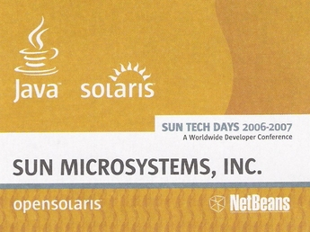

NetBeans worldTour Lands in Prague
Itís an overcast afternoon and very little seems golden about Prague,
the golden city. A steady
stream of people flows into the Prague Congress Center, a massive
convention
venue that offers spectacular views of Prague and its many spires. But
on November 14, the
view is not the attraction as only a few give it a cursory look before
hurrying indoors.
In one of the centerís auditoriums, the seats are filled to capacity
and a few bodies are
leaning against the walls. On the stage, Roman Strobl, a NetBeans
evangelist,
has concluded a presentation about the recently released NetBeans IDE
5.5
and is now taking questions from the audience.
Yarda Tulach discusses the NetBeans
Platform
A man in a tweed jacket raises a handóhe has a complaint about the
debugger. Strobl deftly, and
with some glee, sends the question over to a long-haired figure
standing
unobtrusively on the sidelines:
"Why don't we ask Yarda for the answer to that? He's one of the
founders of NetBeans."
Jaroslav ìYardaî Turlach, the self-proclaimed ì
enfant
terrible of NetBeansî, has been placed on the spot; the
audience laughs as he shrugs and holds up his hands in mock defense.
But before Turlach can respond a member of the audience has assumed
control of a
wandering microphone and the man begins to suggest a solution.
The moment captures in a nutshell the fundamental purpose of the NetBeans
worldTour, a meeting ground of NetBeans experts, devotees, converts
and the uninitiated, a venue where
ideas are exchanged and information imparted about the latest
developments in
the IDE world. The worldTour visits select cities worldwide and is
organized
around Sun Tech Days, which made a stop this year in Prague, the birth place
of NetBeans.
NetBeans Day Prague saw an
impressive turnout of about 250 attendees from its host country and
surrounding European countries. The afternoon kicked off with a welcome
address
from Jan Chalupa, NetBeans's engineering director, who gave a brief
overview of
the companyís inception and evolution, most notably, the recent updates
to the IDE
with the 5.5 release.
NetBeans evangelist Roman Strobl gave the first of the eventís five
presentations: On the Move
with NetBeans, a 50-minute look at the IDE's latest features and ways
for
developers to incorporate them into their work. The talk included a
quick demonstration of one such feature: the NetBeans GUI builder,
which allows developers
to design GUIs with ease.
Even developers are not immune to a good deal "win a free t-shirt!" when
they see one. Several
hands went up when Strobl promised a limited edition NetBeans t-shirt
to anyone
who could explain the name discrepancy between Maven, the software
project
management tool, and Mevenide, the effort focused on incorporating the
tool into IDEs.
The answer? The discrepancy was a typo that was never corrected.
Jirka Sedlacek reviews the NetBeans
Profiler
Subsequent presentations offered in-depth looks at different aspects of
the NetBeans
IDE. A talk led by software engineer Petr Pisl: "Did You Get Your
Tools with That?" reviewed the support available to Java EE 5 from 5.5,
and
included demos of ways to improve on Java EE applications. Strobl
returned for another
session that gave an overview of the NetBeans IDE's new add-on packs
and
explored how they increased functionality. Later, Yarda Tulach stepped
into the
spotlight to highlight the advantages of working in the NetBeans
platform. The final
presentation was a panel that allowed the audience to NetBeans
engineers Jiri Sedlacek, Tomas Hurka, and Jaroslav Bachorik questions
about the IDE's profiler.
Overall, NetBeans Day Prague was typical
of what NetBeans fans have come to expect from the
worldTour: engaging speakers and enlightening content, and a unique
opportunity to
interact with like-minded individuals who share a passion for all
things NetBeans.
If you missed NetBeans Day Prague, worry
not. There are upcoming tour
dates in other great locations worldwide. NetBeans Day is free and open
to the
public; but registration is required. Sign
up now!
